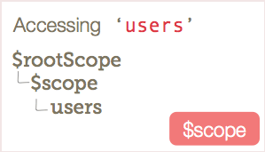
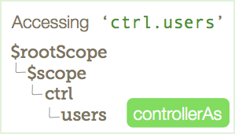

分享人：张峻
目录
1.背景介绍
2.知识剖析
3.常见问题
4.解决方案
5.编码实战
6.扩展思考
7.参考文献
8.更多讨论
在Angular中，有几种不同的方式来声明和使用控制器。
在最开始的时候我们对于angular在view上的绑定都必须使用直接的scope对象，对于controller来说我们也得必须注入$scope这个service
angularjs从1.2版本开始带来了新语法Controller as。
它使我们不需要把$scope作为依赖项。简洁了controller，同时我们可以使用this在控制器上直接添加我们想要的任何属性。
从引用方式，作用范围，对象对比三个方面做两者的比较：
1、$scope 只需要在注入中声明，后面就可以直接在附加数据对象：
controller:
var app = angular.module("myApp",[]);
app.controller("testCtrl",function($scope) {
$scope.test = "一个例子"; //在$scope对象中加入test
})
html:
{{test}} // "一个例子"
2、this 则采用了controller as(需要版本为ng 1.2+)写法：
controller:
app.controller("testCtrl",function() {
var this = vm;
vm.test = "一个例子"; //在this对象中加入test
})
html:
{{vm.test}} // "一个例子"
看到上面的用法是不是有点眼熟，让我们回忆一下js中的构造函数和实例：
var MyClass = function(){
this.test = "一个例子";
}
var myInstance = new MyClass();
// 现在我们可以使用myInstance示例来访问MyClass的属性和方法。
myInstance.test; // "一个例子"
controller:
app.controller("testCtrl",function(vm) {
var this = vm;
vm.test = "一个例子"; //在this对象中加入test
})
html:
{{vm.test}} // "一个例子"
app.controller('testCtrl',function(){})就是在定义一个名称为testCtrl的构造函数，testCtrl as vm就是在实例化，生成testCtrl的实例vm，然后就可以在vm中访问testCtrl里定义的变量和函数。
但是，Controller as的语法是将controller绑定了当前的$scope，而不是都绑向同一个$scope变量。1、$scope 中的变量或数据对象我们可以全部拿到，并且上级控制器中的变量也可以在下级控制器中被获取到：
controller:
app.controller("parentCtrl",function($scope) {
$scope.test = "测试";
$scope.cover = "覆盖测试";
})
app.controller("childCtrl",function($scope) {
$scope.childTest = $scope.test;
$scope.cover = "子覆盖测试";
})
html:
Parent-test : {{test}}
Parent-cover : {{cover}}
Child-test : {{childTest}}
Child-cover : {{cover}}
我在父控制器 parentCtrl 中声明的test变量并未在子控制器 childCtrl 中做声明，而在 childCtrl 作用范围内的 child-test 中，test 却输出了”测试”；基于此我再做了一次覆盖测试，检测结果显示，当父子控制器同时存在相同的变量时， 父子控制器各自范围内的值不会被覆盖；
2、this 中的变量则只适用于当前控制器：
controller:
app.controller("parentCtrl",function($scope) {
var vm = this;
vm.test = "测试";
vm.cover = "覆盖测试";
})
app.controller("childCtrl",function($scope) {
var vm = this;
vm.cover = "子覆盖测试";
})
html:
Parent-test : {{parent.test}}
// "测试"
Parent-cover : {{parent.cover}}
// "覆盖测试"
Child-test : {{child.test}}
Child-cover : {{child.cover}}
// "子覆盖测试"
Child-test : {{parent.test}}
Child-cover : {{parent.cover}}
// "子覆盖测试"
在使用this的时候，各层级变量的命名空间是平行的状态，模板html中只可以拿到当前控制器下声明的变量。
vm与$scope实际上是不相等的。
app.controller("parentCtrl",function($scope) {
var vm = this;
$scope.abc = function() {
console.log(vm === $scope)
}
})
实际结构是
$scope: {
...,
vm: Constructor,
...
}
$scope中包含了一个变量vm: Constructor
$scope 当控制器在写法上形成父子级关系时，子级没有的变量或方法父级会自动强加在子级身上，子级可以任意获取到当前父级的变量或方法，该种形式是不可逆的，即父级无法通过$scope获取到子级的任意变量或方法。
this 则像一个独立的个体，所有东西都是由自己管理，也就不存在父子级变量混淆关系了。
两种方式其实在性能上并无优劣之分，只有代码习惯的选择。
这或许可以取决于我们观察的角度，其实可以理解为私用跟公用的区别！
在html中：
...
在ui-rooter中：
$stateProvider
.state('myState', {
controller: 'myCtrl',
controllerAs: 'ctrl'
})
// 或者
$stateProvider
.state('myState', {
controller: 'myCtrl as ctrl'
})
在directive中：
app.directive('myDirective', function () {
return {
restrict: 'EA',
replace: true,
scope: true,
templateUrl: 'xx.html',
controllerAs: 'vm',
controller: function () {
var vm = this;
console.log(vm);
}
link: function () {}
};
});
1、$scope是基于原型进行继承的，比如说当我们查找一个user对象时，angular会先查找当前$scope有没有user，如果没有的话就继续往上层$scope查找，直至$rootScope。

而在controllerAs中，假设我们使用controllerAs
UserCtrl as ctrl
angular将控制器自身挂载在$scope上，user也变为ctrl.user，就不会存在上述的一层层查找的过程。在很多情况下，比如在嵌套的路由中，上述$scope基于原型的查找，有时候确实会提供一些便利，但这些都可以用服务来实现，也应该使用服务来实现。

2、大家在初次接触angular时一定会被推荐过将所有数据都绑定在$scope的一个对象上（比如$scope.data）来避免一些js中值的复制和对象的引用可能会造成的一些问题，而使用controllerAs后就不需要这一步了。
3、因为不使用$scope也就不能使用$on,$watch,$emit之类的方法，这些方法本来就应该尽量少用，这样就可以更好的控制项目中的代码。
4、便于新手学习，刚开始学习angular时对于$scope这个东西往往无法理解，而用controllerAs vm之后，则将vm（view model的简写）作为视图模型则比较好理解。
参考一：AngularJS : this与$scope数通的暴露与通讯
感谢大家观看
BY :熊凡 | 张峻